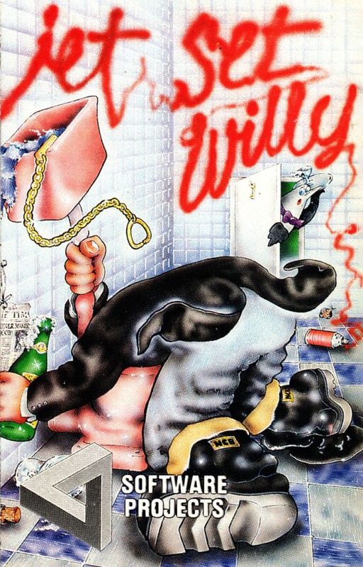
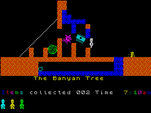
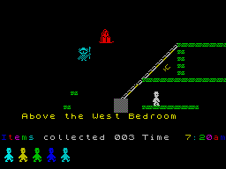

Jet Set Willy


{kind=link}

| Publisher: | Software Projects |
| Price: | £5.95 |
| Year: | 1984 |
| Source: | CRASH, Issue 4 |

It is unusual to have one software house releasing two really excellent games at the same time, but that is what Software Projects have just done. Manic Miner’s follow-up, Jet Set Willy, is obviously destined for the top of the charts, and its almost guaranteed success may well overshadow the second game, which would be a pity. So, congratulations to Software Projects.
There were rumours that Matthew Smith was a figment of the Liverpool computing mass psyche, or merely a clever code name for a Tandy computer. There were rumours that Matthew Smith didn’t really exist, and that if he did, then Jet Set Willy didn’t and wouldn’t. So, after all the waiting, was it worth it? In fact, it’s probably worthless even reviewing Jet Set Willy, since by the time you read this you will probably have already worked out the boots to cheat the game!

Banyan Tree.
The rags-to-riches story is already well known. Rich from his sub-Surbiton mining exploits, Willy has bought a huge mansion with over 60 rooms, most of which he has never seen. There’s been a mammoth party and the guests have left the place in a dreadful mess. Willy just wants to go to bed, but his housekeeper, the nightmarish Martha, won’t let him until every bit and piece has been picked up and tidied away.
It is always difficult to do a sequel to a best-seller. Not only should it have the same style, it should be bigger and better. Jet Set Willy seems to score on all counts. Very sensibly, it is actually a very different game to Manic Miner, much more of an adventure in which the player can move freely between the linking rooms and work out the structure of Willy’s strange house. In keeping with a good adventure, there are some random elements that have been thrown in. In some rooms the hazards may change places, or disappear altogether. Some rooms may not be entered from a particular direction — you lose all your lives, and sometimes that does not happen. In all respects, the creation of all the rooms is exceptional, each with its own peculiarities. Some of them are very hard to solve.
Software Projects have included a complex colour code with the inlay, which must be looked after at all costs, since the game will not run without a correct code entry after loading is completed.
CRITICISM

‘I consider this game not as a follow-up to Manic Miner, but as something quite different. It has a totally different game structure, more interesting graphics — like the swinging ropes that are highly realistic, bobbing rabbits, deadly razor blades, wobbling jellies and endless other inventions. Not a single graphic has been taken from Manic Miner, with the exception of Willy himself, now in a natty hat rather than his mining gear. Quite simply, the sound is excellent, the graphics are brill and the colour is great. A classic.’
‘If Manic Miner was maddening, frustrating and fun then Jet Set Willy should certainly be put on the Government’s list of proscribed drugs. The cynical manner in which you are given so many lives to play with is just typical of the extraordinary talent of Matthew Smith — mean through and through! I thought, well with so many lives it must be easy to get a long way. Yet they just disappear before your very eyes. The detail of the graphics is marvellous. The dreadful Maria with her pointing hand of accusation, the flickering candles, the grinning heads, the leaping security guards, just everything has been worked as far as it can go. If there’s no demo in this game, it is because it would spoil the fun of exploring the huge mansion, and besides, I doubt whether there’s a nibble left in the memory, yet alone a spare byte before tea. Now I must get back to The Banyan Tree and try again for the tenth damned time in a row to get through...’
‘Jet Set Willy is a high point in the development of the Spectrum game. I hope there will be others, maybe ones of a different kind, but I’m sure nothing will top this game for addictivity, fluent graphics, responsiveness and sheer imagination. The nightmare quality of the events suggests its author should be receiving therapy. Instead, he’s probably getting rich. Good luck to him...’
COMMENTS
| Control keys: | Alternate keys row Q to P left/right. SHIFT to SPACE for jump |
| Joystick: | Pointless having one, keyboard is much better |
| Keyboard play: | Highly responsive, but watch the tight spots, which have been purposely made as finicky as possible |
| Use of colour: | Excellent |
| Graphics: | Perfect |
| Sound: | Excellent |
| Skill levels: | How nimble are your fingers? |
| Lives: | 8 |
| General rating: | To date, one of the most addictive and finest Spectrum games. |
| Use of computer: | 90% |
| Graphics: | 96% |
| Playability: | 94% |
| Getting started: | 90% |
| Addictive qualities: | 98% |
| Value for money: | 99% |
| Overall: | 95% |